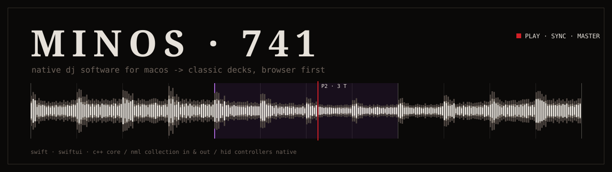

native dj software for macos.
◆ DOWNLOAD
homebrew
brew install --cask slayer7411/tap/minos-741first start
not signed by apple -> first start: system settings -> privacy & security -> OPEN ANYWAY.
◆ UPDATES
the app updates itself. channel: ⌘, -> ANZEIGE -> Updates.
- newest build (default): every build of main, rolling release latest-build
- stable versions: only the named releases vX.Y.Z
◆ FEATURES
- two browser panes side by side or stacked, each with own source, search, sort, tag filter and columns
- tags live in comment 2 of the collection, so they travel with the library
- audio unit (v2 / v3) and VST3 effects in fx insert slots, up to 6 in series per unit
- audio units can run isolated in a separate service: a crashing plugin does not take the audio down
◆ HELP
- user guide slayer7411.github.io/MINOS-741-releases/guide/
- bugs and ideas github issues
- sets soundcloud.com/minos-741
- instagram @minos_741
◆ LICENSE
GPL-2.0-or-later. this repository holds builds only. complete corresponding source code of any build is available on request for three years from that build's release -> open an issue. name, ◆ mark and logo stay with the author.
full text: LICENSE.md. third party: link library (GPL-2.0-or-later), signalsmith-stretch and signalsmith-linear (MIT), VST 3 SDK hosting part (MIT), cinzel and ibm plex mono fonts (SIL open font license 1.1, cinzel, ibm plex mono). VST is a registered trademark of Steinberg Media Technologies GmbH. all notices ship inside the app bundle.